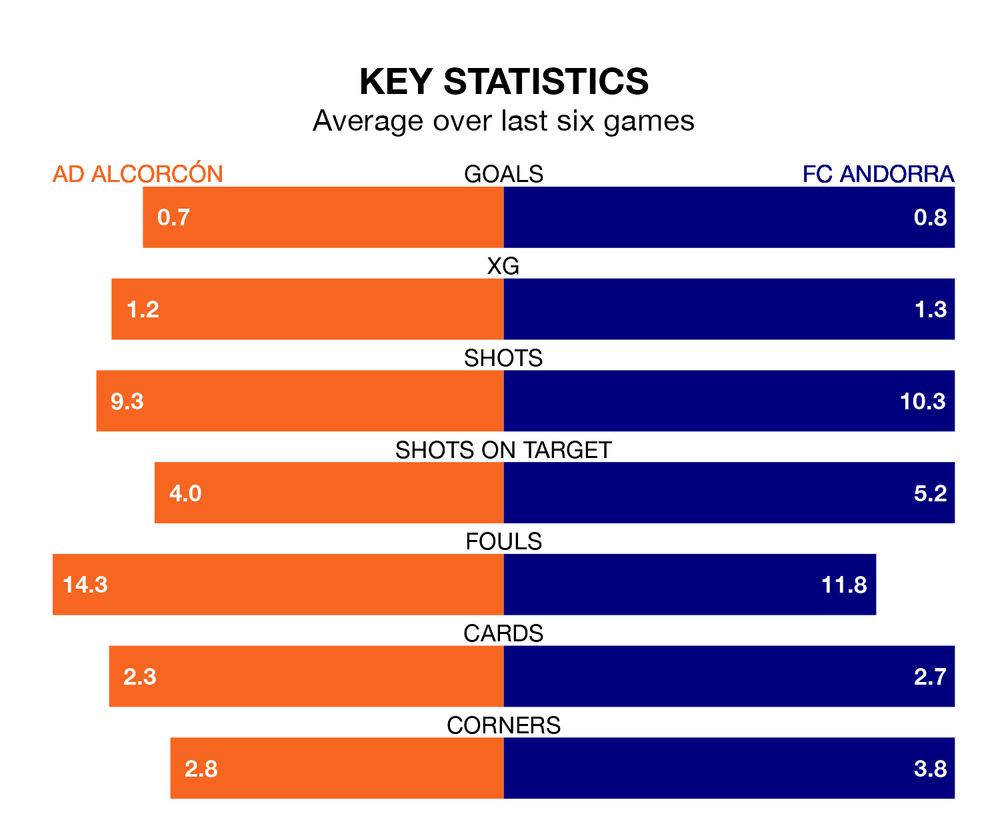

FC Andorra come to the Estadio Santo Domingo to play AD Alcorcón on Sunday in terrible form, having collected just two points from their last six games.
The visitors have drawn two and lost four of their last six fixtures, while Alcorcón have three wins and two draws.
Andorra are 21st in the table after 24 games, of which they have won six and drawn five, earning 23 points.
Alcorcón are three places ahead of the visitors in 18th, with six wins and seven draws putting them on 25 points.
With 20 goals in 24 games so far this season, the home team are the league's third-lowest scorers with 0.8 goals per game. And they are conceding more than average, letting in 33 goals at a rate of 1.4 per game.
Andorra are also below average scorers, with 0.9 goals per game, compared to a league average of 1.2. They have conceded 1.4 goals per game.
Alcorcón's last match was on January 27, a 0-0 draw against Real Zaragoza.
Andorra lost 1-0 against Elche CF last time out, on January 28.
Updated: 10:03 (UTC), 30/01/24